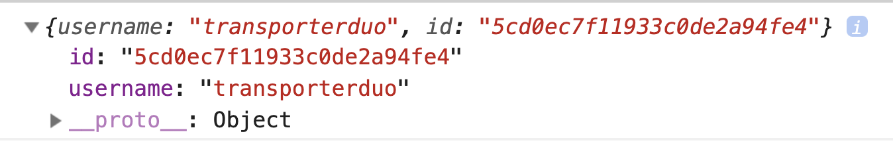
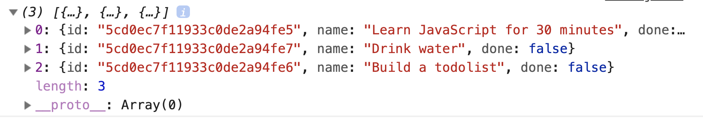

You should get a response that the user is created.

Note: You only need to create a user once. You can delete this code once you’ve created your user.
Fetching tasks
The Todolist API creates three tasks for you automatically. I made it this way because I want you to learn to fetch tasks first. (It’s easier to learn this way).
To fetch tasks, you need to send a GET request to /tasks. Make sure you include your username and password to authenticate yourself.
You should see three tasks in your console. The three default tasks are:
Learn JavaScript for 30 minutes
Build a todolist
Drink water

We need to use username and password to authenticate ourselves for every request we make to the Todolist API. To make this easier, we can create an auth variable at the start. And we can reuse this auth variable when we need it.
You see the empty state because it takes time to fetch tasks from the Todolist API. We’ll fix empty state issue in a bit.
Changing the id
Each task from the database contains an id. If we use this id, we don’t need to generate one ourselves. Let’s change makeTaskElement to take in this id.
While we’re at it, let’s also accept the done property. (We’ll use it when we edit tasks in a later lesson).
Since we changed makeTaskElement, we need to update parts of the code we used it in.
// Adding a task to the DOM
todolist.addEventListener('submit', event => {
// ...
const id = generateUniqueString(10)
const taskElement = makeTaskElement({
id,
name: inputValue,
done: false
})
// ...
})
Fixing the empty-state flash
Right now, the Todolist flashes an empty state for a bit before populating the DOM with tasks. This can create confusion for users if they knew they’ve created some tasks.
We want to find a way to tell users we’re fetching their tasks from the database. The simplest way is to change empty state message.
<div class="todolist__empty-state">
Fetching your tasks... Please wait a bit... ⏰.
</div>
After tasks are fetched, we change the message of the empty state again.
const emptyStateDiv = todolist.querySelector('.todolist__empty-state')
zlFetch(/*...*/)
.then(response => {
// Append tasks to DOM...
// Change empty state text
emptyStateDiv.textContent = 'Your todo list is empty. Hurray! 🎉'
})
.catch(error => console.log(error))